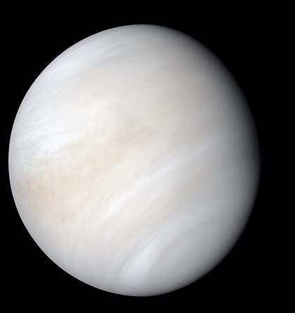

Венера

Венера — вторая по удалённости от Солнца и шестая по размеру планета Солнечной системы, наряду с Меркурием, Землёй и Марсом принадлежащая к семейству планет земной группы. Названа в честь древнеримской богини любви Венеры. По ряду характеристик — например, по массе и размерам — Венера считается «сестрой» Земли. Венерианский год составляет 224,7 земных суток. Она имеет самый длинный период вращения вокруг своей оси (около 243 земных суток, в среднем 243 сут) среди всех планет Солнечной системы и вращается в направлении, противоположном направлению вращения большинства планет. Венера не имеет естественных спутников. Это третий по яркости объект на небе Земли, после Солнца и Луны.